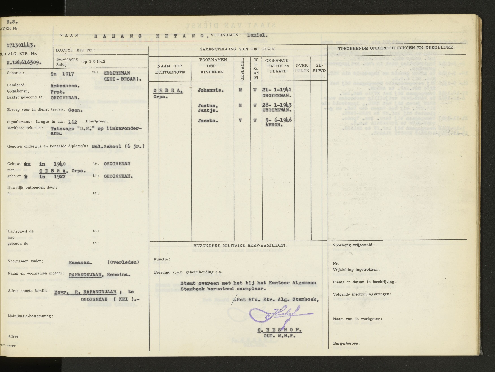

Nieuwe archiefbronnen: Celebes en Oost-Java (1947)
Deze pagina verzamelt de digitaal raadpleegbare originele archiefscans die relevant zijn voor het onderzoek naar Daniël Rahangmetang (legernummer 171301443). De links openen de scans rechtstreeks bij het Nationaal Archief. De archiefviewer toont de originele bronafbeelding; de nieuwe archiefscans zijn hier niet als lokale kopie opgeslagen. Het persoonlijke stamboek is wél als afbeelding in de website opgenomen.
Bewijsgrens: de operationele overzichten gaan over troepen en gebieden, niet automatisch over Daniël persoonlijk. Zijn persoonlijke dienststaat vermeldt op 21 november 1947 de overgang naar de territoriale troepen Oost-Java te Soerabaja. Eenheidsacties op Celebes na die datum mogen niet zonder aanvullend bewijs aan hem worden toegeschreven.
Persoonlijke primaire bron: militair stamboek
Onderstaande afbeelding staat al in het bronnenarchief van deze website. De afbeelding bevat de militaire dienstregistratie van Daniël. Vergelijk de mutaties in het origineel met de chronologie verderop.

Originele scans en relevantie
1. Verplaatsing van Infanterie XV en XVII – november 1947
Onder de kop Zuid-Celebes staat onder meer de melding 22 nov.: 7-Inf. XV ex Pare-Pare naar Soerabaja. Het betreft een eenheidsverplaatsing; de datum kan verschillen van de administratieve mutatiedatum in Daniëls dienststaat. Dit is de sterkste gevonden operationele aansluiting bij de overplaatsing die Daniëls dienststaat op 21 november 1947 registreert. De bron bewijst op zichzelf niet dat hij in een specifiek transport of colonne zat.
2. Dislocatie en compagnies – 29 november 1947
Het vervolg bevat de dislocatie van troepen op 29 november, waaronder Infanterie XV en andere bataljons. Dit is relevant voor het reconstrueren van de organisatorische indeling en locaties. De genoemde commandanten of compagnieën mogen niet zonder personeels- of transportorder aan Daniël worden gekoppeld.
3. Troepenoverzicht, 29–30 november 1947
Onder B. Operationele gegevens troepen / I. Dislocatie staat dat Infanterie XXIII op 29 en 30 november scheepsgewijs naar Soerabaja vertrok. Deze eenheidsverplaatsing valt niet samen met de administratieve overplaatsing van Daniël op 21 november en bewijst niet dat hij aan boord van die schepen was.
Let op: in de aangeleverde schermafbeelding staat de viewer op scan 264 terwijl de adresbalk eindigt op 0268. De scan- en URL-nummering zijn daarom niet als gelijkwaardig behandeld.4. Distributielijst – documentoverzicht
De distributielijst toont welke commandoposten en militaire onderdelen het rapport ontvingen. Dat helpt de archiefstructuur begrijpen, maar is geen bewijs van persoonlijke dienst of aanwezigheid.
5. Rapport december 1947
Een nieuw rapport, gedateerd 30 december 1947, beschrijft de periode 11–25 december 1947. Dit is voornamelijk regionale en politieke context over Oost-Indonesië, niet een persoonlijk verslag van Daniël. De verdere rapporten over Celebes zijn na zijn geregistreerde overplaatsing naar Soerabaja minder direct relevant.
Archiefscans: rechtstreeks bij de bron bekijken
De originele archiefbeelden worden bij het Nationaal Archief bewaard. De bronlinks hieronder openen de scan in de officiële viewer. Een externe website kan die viewer niet betrouwbaar als afbeelding insluiten; daarom gebruiken we hier geen lege of geblokkeerde kaders.
Juni 1947 — Infanterie XV en XVII in Zuid-Celebes
Scan 32 beschrijft operationele inzet van de bataljons Infanterie XV en XVII en speciale colonnes. Daniël diende toen volgens zijn stamboek bij Infanterie XV in Pare-Pare. Het document geeft dus een relevante beschrijving van zijn militaire omgeving, maar geen bewijs van zijn deelname aan een specifieke patrouille.
Juni 1947 — periodiek rapport over de geest in de troep
Scans 51 en 52 bevatten een periodiek rapport, afgesloten op 12 juni 1947. De besproken patrouilles en disciplinaire kwesties betreffen onder meer onderdelen van Infanterie XVII en XVIII. Daniël was in juni 1947 ingedeeld bij Infanterie XV; dit zijn daarom regionale contextbronnen, geen bewijs van zijn persoonlijke handelen.
November 1947 — overplaatsing naar Oost-Java
De bron over de verplaatsing van 7-Inf. XV is direct relevant voor de overgang van Daniël van Pare-Pare naar Soerabaja. De afzonderlijke datering in het eenheidsrapport en het persoonlijke stamboek blijven naast elkaar staan.
Persoonlijke chronologie ter vergelijking
17 oktober 1946: XVIIe Bataljon Infanterie te Makassar.
23 november 1946: XVe Bataljon Infanterie te Pare-Pare.
13 oktober 1947: 7-Inf. XV te Pare-Pare.
21 november 1947: territoriale troepen Oost-Java te Soerabaja.
1 december 1947: Infanterie XXIII, M.C.; de precieze betekenis van M.C. moet nog worden geverifieerd.
1 oktober 1948: 2-Inf. IV te Malang.
Openstaande onderzoeksvraag
Welke transport- of verplaatsingsorder verbindt 7-Inf. XV te Pare-Pare in november 1947 met Soerabaja, en op welke datum vertrok welke compagnie? Hiervoor zijn bataljonsdagorders, inschepingslijsten en transportoverzichten nodig. De gevonden scans leveren een aanknopingspunt, maar nog geen sluitende persoonlijke colonne-identificatie.